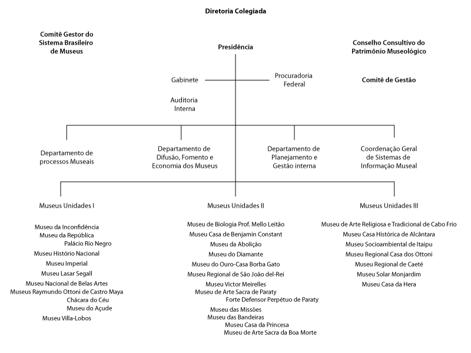

2. Instituições governamentais
2.3 Instituto brasileiro de museus
O Instituto Brasileiro de Museus teve sua origem no Departamento de Museus e Centros Culturais (DEMU), criado na estrutura do Iphan, em 2003, que assumiu a gestão dos museus desse instituto. Com o tempo, desvinculou-se, tornando-se uma autarquia federal, criada pela Lei nº 11.906, de 20 de janeiro de 2009. Sua criação marca a última reformulação organizacional do Iphan e consequente transferência dos direitos, deveres e obrigações no que se refere aos museus federais.
De forma geral, o órgão é responsável pela Política Nacional de Museus (PNM) e pela melhoria dos serviços do setor. Entre os programas e ações desenvolvidas pelo Ibram, recebem atenção: o quantitativo de visitação, na busca por aumentá-la; a arrecadação dos museus; o fomento de políticas de aquisição e preservação de acervos, incluindo ações voltadas à segurança dos museus, e a criação de ações integradas entre os museus brasileiros, apresentados a seguir.
Com o intuito de aumentar a visitação para além de mobilizar os museus brasileiros a desenvolver atividades especiais, tais como exposições, palestras, oficinas, seminários e ações educativas, alguns eventos regulares fazem parte da agenda do órgão. A Semana dos Museus é realizada normalmente por volta do dia 18 de maio, desde 2003, em comemoração ao Dia Internacional dos Museus. Essa é uma atividade que já vinha sendo desenvolvida pelo Demu/Iphan (Departamento de Museus/Iphan). Além dela, também são realizados a Primavera dos Museus, que ocorre durante o mês de setembro, e o Fórum Nacional de Museus, a cada dois anos. Este se diferencia, pois tem o objetivo de pensar, avaliar e definir diretrizes para a Política Nacional de Museus (PNM) e consolidar as bases para a implantação de um modelo de gestão integrada dos museus brasileiros, representado pelo Sistema Brasileiro de Museus (SBM).
Com projetos e programas, o órgão também busca responder às suas responsabilidades. Desde 2011, o Programa Nacional de Educação Museal (PNEM), que tem como objetivo subsidiar a atuação profissional dos educadores, fortalecer o campo profissional e garantir condições mínimas para a realização das práticas educacionais nos museus e processos museais, vem sendo construído em parceria com os museus e a sociedade em todo território nacional. Além disso, o projeto Conexões Ibram levou, em 2012, vários temas para serem discutidos com os representantes do setor cultural e cidadãos de 17 estados do país. Seu principal intuito era conectar os museus às novas políticas e aos instrumentos de gestão museais. Entre os temas apresentados, estavam: Estratégias de Fomento e Financiamento; Estatuto de Museus e Plano Nacional Setorial de Museus, os quais poderiam ser mais bem adequados de acordo com as necessidades expressas pelo estado visitado.
Vale destacar um último, e mais recente, programa implementado pelo instituto: o Programa para Gestão de Riscos ao Patrimônio Musealizado Brasileiro. Seus objetivos se voltam para: a capacitação de profissionais na área da gestão de riscos de acervos e orientação na compra de materiais e equipamentos que lidem com a questão; a elaboração e implementação do plano de gestão de riscos nas unidades museológicas vinculadas ao Ibram; o estabelecimento de um diálogo com reuniões técnicas e visitas que envolvam os profissionais da segurança dos museus do Ibram e de convênios com outras instituições que possam contribuir com pesquisas e proposições de técnicas.
Página 100Sugestão de atividade:
Além dessas, várias outras ações são realizadas no âmbito do Ibram. Que tal pesquisar um pouco mais sobre esses programas na página do órgão e descobrir quais dessas ações já chegaram ao seu município? Compare seus resultados com os demais colegas e com o total de municípios beneficiados. Com isso, problematize a atuação do órgão no seu contexto local de atuação.
Desde sua criação, o Ibram é subordinado ao Ministério da Cultura e tem em sua estrutura uma Presidência assessorada pelo Gabinete, pela Procuradoria Federal e uma Auditoria Interna. Ao lado da Presidência estão o Comitê Gestor do Sistema Brasileiro de Museus e o Conselho Consultivo do Patrimônio Museológico, seguidos do Comitê de Gestão.
O Conselho Consultivo do Patrimônio Museológico é o responsável pela definição de bens culturais e coleções que deverão ser declarados de interesse público – a fim de ter garantida sua preservação e manutenção.
Abaixo dessas divisões estão três departamentos: o de Processos Museais, o de Difusão, Fomento e Economia dos Museus, o de Planejamento e Gestão Interna e a Coordenação Geral de Sistema de Informação Museal.
O órgão também é responsável pela administração direta de 30 museus, que são administrados em três unidades, como pode ser visto na figura 03. Para conhecer esses museus, acesse o site museus.gov.br. De Goiás, são três: o Museu das Bandeiras e o Museu de Arte Sacra da Boa Morte, localizados na Cidade de Goiás, e o Museu Casa da Princesa, situado em Pilar de Goiás.
{kind=link}
Organograma Funcional do Instituto Brasileiro de Museus.
